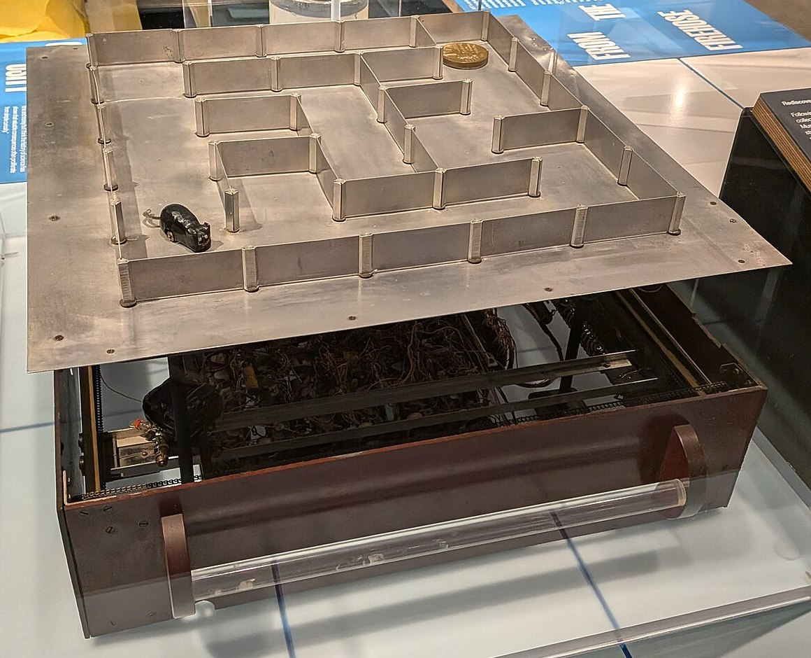
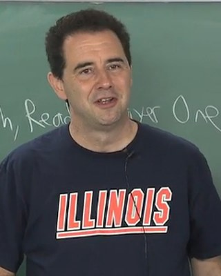
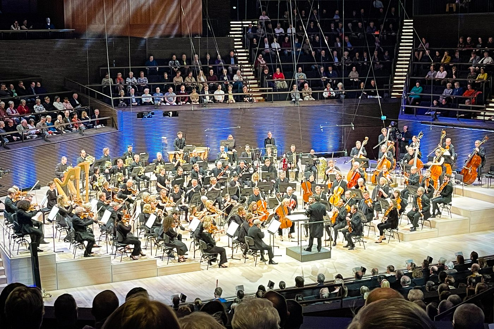
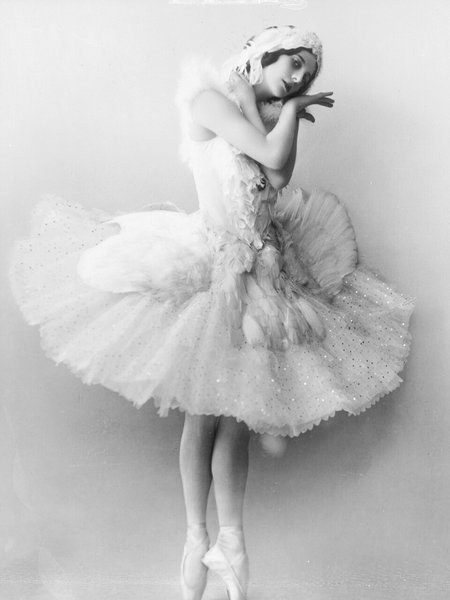
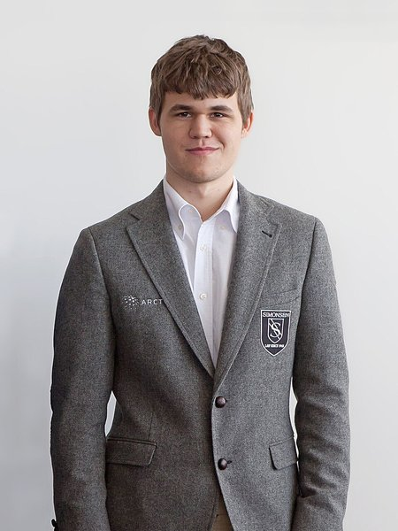
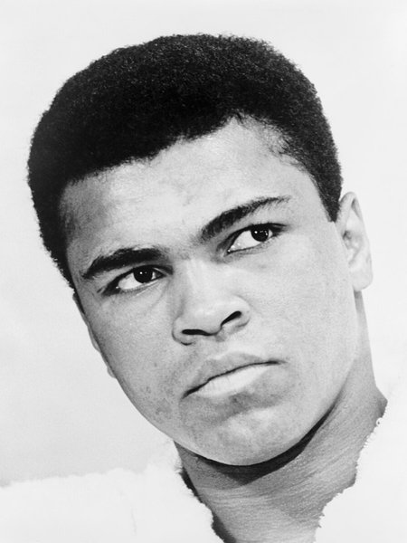
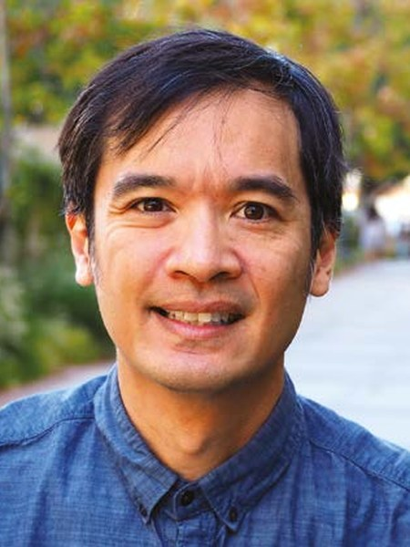

Matematiikka tekoälyaikakautena ja matematiikan inhimillinen puoli
Vadim Weinstein · Ressun lukio · 5.11.2026
Minä
Ressu, yo-05
FT 2011 (HY) matematiikasta: logiikka, joukko-oppi, topologia,
MSc 2016 (WY) kognitiotieteestä: enaktivismi, mielen filosofia,
Tutkimusta & luennointia Wienin, Helsingin ja Aalto-yliopistoissa 2012-2019
Matemaattista robotiikkaa Oulun yliopistossa 2020-2026
Yritystoimintaa, konsultointia: nettikasinoiden matematiikkaa sekä matematiikan opettaminen tekoälylle, lukiolaisille ja muille. Manifold Solutions Oy, matikkapelit.fi, TikTok @matikkapelit
Materiaalin kehittämistä mm. lääkisvalmennukselle(lääkisvalmennuksen perustaja Sampo Tiensuu on myös Ressu, lääkisvalmennus.fi)
02
Königsbergin sillat
Königsbergin sillat
Löytyykö kaupungista kävelyreitti, joka ylittää jokaisen sillan tasan kerran ja palaa lähtöpaikkaansa?
Eulerin oivallus
Abstrahoidaan kartta verkoksi: jätetään solmut ja särmät.
Kun solmuun saavutaan särmää pitkin, on samasta solmusta poistuttava toista särmää pitkin.
Sisään- ja ulostulo särmät muodostavat pareja, eli jokaisen solmun aste on oltava parillinen.
Königsbergin verkossa kaikki asteet ovat parittomia ⇒ Mahdotonta.
Leonhard Euler1707–1783 · ratkaisi 1736
Eulerin lause
Tämä pätee kaikille yhtenäisille verkoille: Eulerin kierros on olemassa jos ja vain jos kaikki asteet ovat parillisia.
Parittomat solmut magentalla.
Kun yrittää kiertää verkkoa, polku juuttuu aina parittomaan solmuun.
Muutetaan verkkoa niin, että kaikki asteet ovat parillisia.
Nyt kierros onnistuu.
Solmujen parillisuus on siis hyödyllinen invariantti. Solmujen asteiden parillisuus on yleensä huomattavasti helpompi määrittää kuin kokeilla kaikki mahdolliset kierrokset.
Eulerin kierros polku
Toinen Eulerin lause: yhtenäisessä verkossa Eulerin polku on olemassa jos ja vain jos paritonasteisia solmuja on 0 tai 2.
"Talon" voi piirtää yhdellä vedolla: Eulerin polku.
Parittomia solmuja on tasan kaksi. Polku alkaa toisesta ja päättyy toiseen.
Neljä paritonta solmua ⇒ mahdotonta.
Esimerkki matemaattisesta mahdottomuustodistuksesta.
DNA:n sekvensointi
Sekvensointilaite ei lue genomia alusta loppuun, vaan lyhyinä pätkinä. Pätkät pitää koota oikeaan järjestykseen.
Jokainen pätkä on särmä ensimmäisestä viimeiseen kirjaimeen (nukleotidiin): ATG on särmä AT → TG.
Genomi on Eulerin polku: jokainen pätkä käytetään tasan kerran.
Huom: tässä verkko on suunnattu!
Hamiltonin polku
Polku, joka käy jokaisessa solmussa tasan kerran. Jos se lopuksi palaa alkuun, se on Hamiltonin kierros.
Eulerin polussa jokainen särmä kuljetaan kerran, Hamiltonin polussa jokaisessa solmussa käydään kerran.
William Rowan Hamilton 1857: Icosian-peli. Kierrä dodekaedrin kaikki 20 kärkeä.
Pölynimurirobotti
Pölynimuri haluaa käydä jokaisessa huoneessa kerran.
Huoneet ovat solmuja, ovet särmiä: etsitään Hamiltonin polku.
Keittiön kautta eteiseen: jumissa.
Toinen järjestys onnistuu.
Onko olemassa Hamiltonin polkua?
Eulerin polulle on helppo testi: laske asteet. Hamiltonin polulle ei tunneta nopeaa menetelmää.
Paras tunnettu tapa on kokeilla kaikki mahdolliset reitit. Tämä on yhtäpitävä kuuluisan P = NP -ongelman kanssa, joka on avoin vuodesta 1971. Kuka ehtii ratkaista tämän ensin, tekoäly vai ihminen?
Verkkoteoria ja topologia
Geometrinen
Eulerin havainto synnytti verkkoteorian ja loi myös perustan topologialle.
Topologinen
Esimerkki matemaattisesta läpimurrosta.
03
Robotit ja topologia
Robotti labyrintissa
Sääntö: seuraa seinää niin, että seinä pysyy aina oikealla puolellasi.
Topologisesti kiekko ja annulus
Kiekko, jonka reunassa on aukko: reunaa kiertämällä tulee aina aukolle.
Annulus: saarekkeen reuna on oma ympyränsä. Sitä kiertävä robotti ei koskaan pääse ulkoreunalle.
Robottihiiri

Claude ja Betty Shannon 1950: Theseus, labyrintin ratkaiseva hiiri. Releet muistavat reitin.
Topology and AI
Kysymys: milloin robotti ei voi erottaa kahta ympäristöä toisistaan?
Topologinen analyysi.

Steven M. LaValleOulun yliopisto
Neljä maailmaa, yksi kokemus
Jokaisessa risteyksessä on neljä haaraa: kaksi syaania ja kaksi magentaa.
Robotti tekee saman liikesarjan kaikissa neljässä.
Liikeradastaan robotti ei voi päätellä, missä näistä ympäristöistä se on. Tämä on ns. peitekuvausteorian sovellus
Luku 4: kumpi?
Äänestys! Klikkaa valittua, tai paina 1 tai 2.
04
Tekoälymallien universaalisuus
Tekoälymallit ovat universaaleja
Kielimalli, jolla on muisti ja joka saa toistaa askeliaan, voi suorittaa minkä tahansa tietokoneohjelman.
Se on siis yhtä vahva kuin Turingin kone. Siksi myös Turingin koneen rajoitukset koskevat myös kielimallia.
Alan TuringOn Computable Numbers, with an Application to the Entscheidungsproblem (1936)
Agentti A saa syötteen x. Pari (A, x) on turvallinen, jos A ei koskaan paina punaista nappia syötteellä x.
Onko mahdollista suunnitella tarkastaja-agentti T, joka kertoo aina oikein, onko (A, x) turvallinen yhdistelmä?
Tarkastaja-agentille syötetään pari (a, x), jossa a on agentin A koodi, ja T vastaa "turvallinen" tai "vaarallinen".
Häirikkö H
Rakennetaan agentti H, joka kysyy T:ltä: jos T sanoo turvallinen, H painaa nappia. Muuten H ei paina.
H saa syötteeksi oman koodinsa h. Mitä T sanoo parista (h, h)?
"Turvallinen" ⇒ H painaa ⇒ T oli väärässä.
"Vaarallinen" ⇒ H ei paina ⇒ T oli väärässä.
Korrektisuusoletuksesta seuraa, kun X on agentti, jonka koodi on x:
H(x) painaa nappia ⇔ T(x, x) = turvallinen ⇔ X(x) on turvallinen
Sijoitetaan x = h:
H(h) ei ole turvallinen ⇔ H(h) on turvallinen
Täydellistä tarkastaja-agenttia T ei ole.
⇒ Mikään tarkastaja-agentti ei voi taata kaikkien agenttien turvallisuutta.
Tämä on teoreettinen tulos. Käytännössä turvatarkastukset voivat toimia todella hyvin.
04
Hopfieldin verkot
Verkko, joka muistaa
Ising-malli
Magneetti ruudukkona: jokainen solu on pieni magneetti, spin ylös tai alas, +1 tai −1.
Naapurit haluavat osoittaa samaan suuntaan. Energia E = −Σ sisj yli naapuriparien.
Kylmässä spinit järjestyvät ja syntyy magneetti. Kuumassa ne sekoittuvat.
Lenz 1920, Ising 1925. Onsager ratkaisi tason mallin 1944: siirtymä tapahtuu lämpötilassa 2,27.
kylmäkuuma
Hopfieldin verkko on Ising-mallin yleistys
Ising: vain naapurit, ja jokainen pari vetää yhtä lujaa.
Hopfield: jokainen jokaiseen, ja jokaisella parilla oma paino wij, positiivinen tai negatiivinen.
Energia on samaa muotoa, E = −½ Σ wij sisj. Painot valitaan muistojen mukaan, jolloin muistot ovat energian laaksoja.
Hopfield demo
Muistot:
Nykyiset kielimallit ovat Hopfieldin verkkojen kaukaisia jälkeläisiä.
John Hopfields. 1933 · verkko 1982Geoffrey Hintons. 1947
Fysiikan Nobel 2024: Hopfield ja Hinton.
Hubert Ramsauer ym. 2020, Hopfield Networks is All You Need
05
Inhimillisyys matematiikassa
Ymmärryksen kokemus ja viehätys
Kukaan ei voi saada ahaa-elämystä puolestani..
…yhdessä
Sosiaalinen toiminta vaatii ihmisiä – määritelmän mukaan :P
Konsertti-paralleeli

Radion sinfoniaorkesteri, Musiikkitalo 2023Paneelikeskustelu, PaMoSA Oulu 2026
Ideoiden jakaminen toimii livenä parhaiten.
Matematiikasta voi puhua samalla aallonpituudella kenen kanssa tahansa, mistä kulttuurista tahansa.
Matemaattinen diskurssi synnyttää omaa kulttuuria.
Shakki
Tietokone on ollut ihmistä parempi shakissa jo melkein 30 vuoden ajan. Siitä huolimatta shakin suosio on kasvanut ihmisten keskuudessa. FIDE-reitattuja pelaajia 323 k (2018) → 502 k (2025))
TikTok @chess_esportswc
Usko tai älä, me nautitaan matematiikan tekemisestä.
Jouko Väänänen
It would take away the fun of it.
Miguel Moreno
Kilpailullisuus ja omat saavutukset
Kilpailu, ensimmäisenä oleminen ja henkilökohtainen lähestymistapa ovat perinteisesti olleet iso osa matemaatikon motivaatiota.
Minkä muodon nämä saavat tulevaisuudessa?
Tekoäly saavutti 2025 kultamitalin tason matematiikan olympialaisissa.
"Why maths has a future even in the era of AI" Nature, 29.10.2026
Terence Taos. 1975
Maths 2.0 Käytännössä
MALLIehdottaa todistusta
→
LEANtarkistaa sen askel askeleelta: ei aukkoja
→
IHMINENyrittää ymmärtää
Tarkistimessakin voi olla virheitä (Lean on epätäydellinen, virheitä löytynyt 2026), ja tarkistetuksi voi päätyä hiukan eri lause kuin luultiin.
Lean kertoo, että todistus on oikein, mutta ei miksi.
"Todistusten niukkuus" on loppunut.
Tekoälyn avulla on julkaistu todistuksia satoihin vanhoihin ongelmiin.
6.10.2026 OpenAI julkaisi kerralla satoja ratkaisuja. Sekotti pakkaa monissa tutkimusohjelmissa.
Ongelmat Taon mukaan
Todistusähky (proof indigestion): tuloksia tulee nopeammin kuin ihmiset ehtivät sulattaa niitä. Ihmisten ymmärrys jää jälkeen.
Epäselvästi kirjoitettuja todistuksia. Seuraavaan ongelmaan heti, kun todistus on juuri ja juuri esitettävissä.
Ongelmien avoin jakaminen on uhattuna: pelätään, että kilpailija ehtii ensin tekoälyn kanssa. Nuoret tutkijat ovat oppineet juuri näitä ongelmia ratkomalla.
Onko rikkailla yrityksillä nyt etulyöntiasema matematiikassa?
Epäselvää, kuinka paljon mallit käyttävät aiempaa työtä ilman viittausta.
Riski ulottuu matematiikan ulkopuolelle: tekoälyn malleja käytetään jo lainapäätöksissä ja rahoitusriskin mittaamisessa.
Taon Maths 2.0
Kannustimet uusiksiPalkitaan prosessia ja oivalluksia, ei vain sitä, joka ratkaisee ensimmäisenä. Suuria kansainvälisiä yhteistöitä.
Uusia tapoja, ei vain nopeampiaMiljoonien tehtävien aineistoja. Kymmeniä todistuksia samalle lauseelle: mitkä ideat ovat olennaisia?
Avoimet mallitAla ei voi nojata yhtiöihin, joilla on kiire louhia ratkaisuja uusien mallien esittelyyn.
Ihminen valvooKäyttöönotto ei saa ohittaa ihmisten kykyä ymmärtää ja valvoa. Ihmisen pitää aina voida ohittaa malli.
Mihin tämä vie?
Tuloksen saaminenRäjähtää: nopeaa ja halpaa.
Sulattaminen ja ymmärtäminenYhä hidasta.
Insentiivi ei ole enää "saada tulos", vaan ymmärtämisen ilo, yhteisö ja se, että haluamme olla kuljettajan paikalla.
Onko paine kuitenkin sitä kohti, että tekoäly pääsee ohjaajan paikalle?
Valvominen vaatii ymmärrystä.
Ymmärrys oli ennen keino saada tulos.
Nyt se on keino johonkin muuhun -- hallita järjetselmää?
08
Kysymyksiä
Miten matemaattinen ongelma voidaan todistaa sellaiseksi, ettei sillä ole ratkaisua?
Eulerin kierros: invariantti. Parittomat asteet tekevät kierroksesta mahdottoman.
Ratkeavuus Turingin koneella, siis tekoälyllä: diagonaaliargumentti.
Logiikassa: löydä kaksi mallia, joista toisessa väite on tosi ja toisessa epätosi.
Joukko-opissa: pakotus ja sisäiset mallit.
Eteneekö matematiikan tutkimus tasaisesti vai sykäyksittäin? Elämmekö nyt buumia vai suvantovaihetta?
Ehdottomasti molempia.
Sykäyksiä: kokonaan uusia aloja
Verkkoteorian ja topologian synty, Euler 1736
Differentiaaligeometrian synty, Gauss 1827 ja Riemann 1854
Matemaattisen logiikan synty, Boole 1847 ja Frege 1879
Lebesguen integraali, 1902
jne.
Tasaista: alojen sisällä
Matematiikan aloja on AMS:n luokituksessa yli 60, ja jokaisella on oma kehityslinjansa.
Tekoäly on toistaiseksi tuottanut, tietääkseni, vain tasaista kehitystä, ei sykäyksiä.
Voiko kuka vain oppia millaista matematiikkaa tahansa, kunhan jaksaa nähdä vaivaa sen eteen?




Osaatko selittää, miten liukulukulaskennan tarkkuusformaatit toimivat?


.jpg){kind=link}


_(cropped).jpg){kind=link}


.jpg){kind=link}

.jpg){kind=link}

,_Betty_and_Claude_Shannon,_MIT_Museum.jpg){kind=link}
_in_1936_at_Princeton_University.jpg){kind=link}